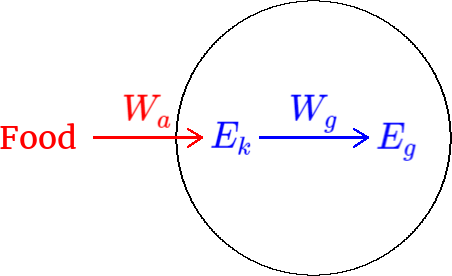

Transformations of mechanical energy are caused by forces.
- For example the force of gravity transforms gravitational potential energy to or from kinetic energy, while the applied force of a student pushing an object transforms chemical energy (food calories metabolized) into kinetic energy.
- The amount of mechanical energy transformed by a force is called the work done by the force.
- An energy flow diagram (also called a Sankey diagram) can be used to illustrate the energy transformations occuring in a system.

.